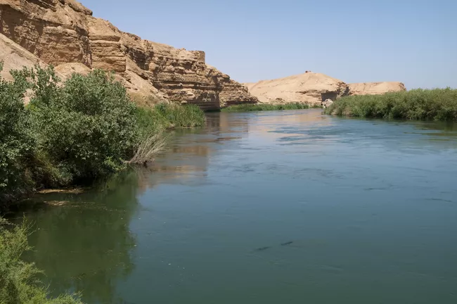
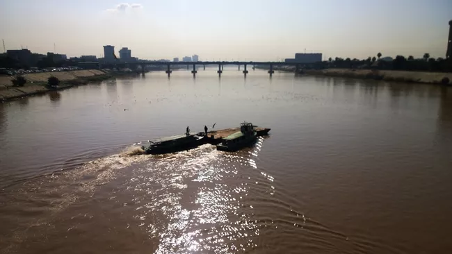

Rivers

euphrates-river
The Euphrates River is one of the largest rivers of western Asia, about 1700 miles long. In the Bible it is referred to by several names such as the "great river" or just "the river" and is among the four rivers, which flowed from the Garden of Eden (Gen 2:14). It formed the northeastern limit of the Promised Land (Gen 15:18). The river, which receives its waters from the mountains of Armenia, flows through a deep and narrow gorge, but as it descends toward Babylon, the Euphrates and the Tigris take different routes, which form the great broad plain of Mesopotamia.

The world's longest river, located in Egypt, the Nile flows 4,132 miles (6,650 kilometres) northward to the Mediterranean Sea (a very unusual direction for a river to take). It was considered the source of life by the ancient Egyptians and has played a vital role in the country's history. The Nile flows from two separate sources: the White Nile from equatorial Africa and the Blue Nile from the Abyssinian highlands. The historian Waterson notes, "The Nile has played a vital part in the creation of Egypt, a process which started about five million years ago when the river began to flow northwards into Egypt" (7-8). Permanent settlements gradually rose along the banks of the river beginning c. 6000 BCE and this was the beginning of Egyptian civilization and culture which became the world's first recognizable nation state by c.3150 BCE. As the Nile River was seen as the source of all life, many of the most important myths of the Egyptians concern the Nile or make significant mention of it; among these is the story of Osiris, Isis, and Set and how order was established in the land.
